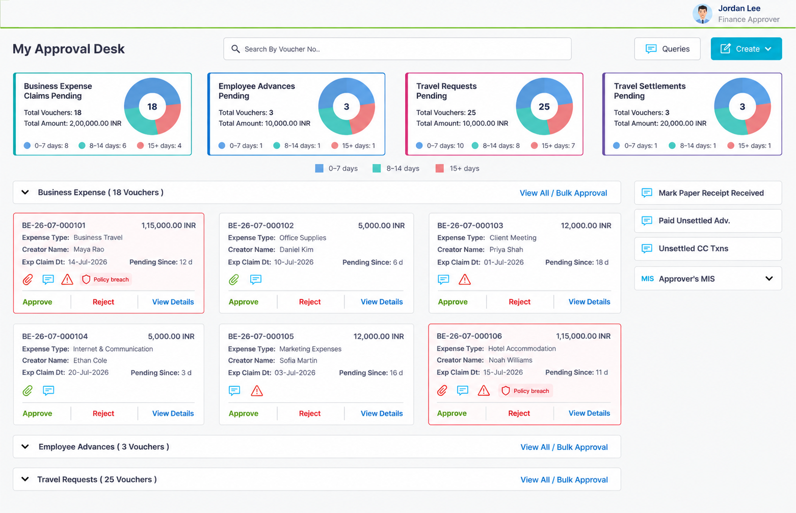
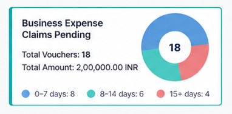
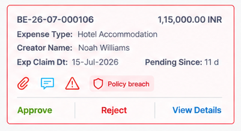
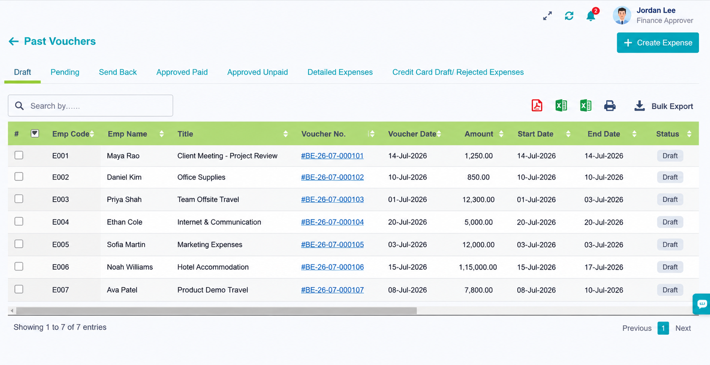

Evidence
Too much scanning
Approvers struggled to identify which items needed attention first.
Design response
Move category, age, amount, policy state, and action earlier in the hierarchy.
Enterprise SaaS · Finance operations
A focused redesign of an enterprise Travel & Expense approval dashboard, helping managers triage pending reports, understand policy exceptions, and process routine approvals with fewer unnecessary steps.

Context and problem
The approval dashboard contained the information managers needed, but it did not make the next decision obvious.
The broader product was seeing lower-than-expected customer traction, and recurring feedback highlighted the approval experience as one area worth improving. Routine reports, ageing submissions, and policy exceptions could appear similar during scanning, so approvers spent too much time opening individual records before understanding which work required attention first.
The redesign also had to work within an existing backend, established approval logic, and policy rules that varied by client. The objective was to improve the decision experience without rebuilding the core system.
How might we help approvers identify what requires attention, understand why it requires attention, and take the appropriate action without opening every report? Approvers described spending too much time identifying which reports required attention first.

Discovery and insight
Communicated with a small set of client-side expense approvers in managerial and finance-oriented roles and reviewed how they identified pending work, interpreted exceptions, and decided what required attention first.
Combined those conversations with workflow walkthroughs, recurring client feedback, support issues, and an assessment of the existing interface. The findings were used to identify repeated workflow patterns; they were not treated as statistically representative research or formal usability validation of the final design.
Evidence
Approvers struggled to identify which items needed attention first.
Design response
Move category, age, amount, policy state, and action earlier in the hierarchy.
Evidence
Pending volume alone did not reveal how long work had been waiting.
Design response
Show ageing bands for 0–7, 8–14, and 15+ days.
Evidence
Ageing and policy exceptions represented different reasons to act.
Design response
Separate policy state from ordinary ageing status.
Evidence
Eligible reports were processed one at a time even when risk was low.
Design response
Introduce page-level bulk approval with explicit safeguards.
Intended success criteria
Design decisions
Prioritisation
A pending count tells an approver how much work exists, but not which work is becoming urgent. I introduced ageing distribution within each report category so approvers could distinguish recent submissions from reports waiting longer.
Make every band label and count explicit, and reassess whether a compact stacked bar would support comparison better than repeated donut charts.

Risk semantics
A report could require attention because it was old, because it violated policy, or because both were true. I surfaced policy state directly in the report summary instead of collapsing every concern into one generic warning.
This gave the approver context at the point of decision and made it clear why a report required individual review.
Critical safeguard: Reports containing policy violations were not eligible for bulk approval.

Efficiency with safeguards
Processing low-risk reports one by one created unnecessary repetition, but a universal “Approve all” action would make the scope and policy implications unsafe.
I introduced page-level selection for eligible reports. Policy-breach reports were excluded, and approval confirmation and rejection-reason capture provided accountability around consequential actions.

Design to code
After the design direction was reviewed, Translated the interface into the existing product environment using HTML5, Bootstrap, CSS, and JavaScript. My contribution covered the interface structure, responsive styling, and JavaScript interactions required to represent the approved dashboard direction.
Reflection
An approval dashboard should help users decide what to do next, not simply display more information.
Ageing and policy exceptions represent different reasons for attention and should not share one generic status.
Bulk actions are useful only when eligibility, scope, confirmation, and exception handling are explicit.
Ageing comprehension, bulk-selection scope, exclusions, permissions, API failures, and accessible operation.
Before a client rollout